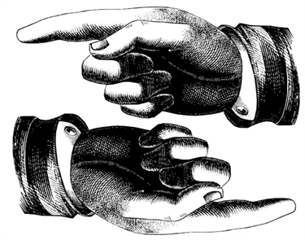

CHOIX
(non)
" Toute la vie est une affaire de choix. Cela commence par : la tétine ou le téton ? Et cela s'achève par : le chêne ou le sapin ? " Pierre DESPROGES

Des petites décisions du quotidien aux grandes résolutions qui peuvent tout bouleverser, la vie comprend une infinie succession de choix à faire. Tant et si bien que, parfois, noyés sous des flots de possibilités, nous n’arrivons plus à savoir ce qui est bon ou pas pour nous. Pourtant nous passons notre vie entière à devoir décider depuis des futilités jusqu’aux éléments majeurs de notre existence comme la personne avec laquelle nous vivons, l’emploi que nous acceptons ou refusons, la conception d’un enfant, l’achat d’un logement remboursable sur quinze ou vingt-cinq ans et une foule d’autres choses plus ou moins importantes.
Que ce soit par facilité, par incapacité ou par fatalité, certaines personnes ne posent pas de choix. Elles se laissent porter par les choix que font les autres pour elles, ou par les circonstances de la vie qui s’imposent à elles. Qu’il s’agisse d’une pathologie ou d’une philosophie de vie, ne pas choisir ne constitue-t-il pas un choix en lui-même ?...
"Choisir, c’est renoncer" est une citation attribuée à André Gide. Il semblerait que ceux qui ne savent pas choisir, ne veulent en fait surtout pas renoncer. En effet, c’est effrayant et angoissant de renoncer. Écarter une seule possibilité, c’est éradiquer des milliers de conséquences en chaîne possibles. Devoir choisir nous rappelle qu’on ne peut pas tout avoir, que nous ne sommes pas tout-puissants, et nous invite à ne pas nous comporter comme des enfants gâtés. Choisir c’est accepter de gérer la frustration de ne pas tout avoir.
Cependant en ne posant aucun choix, on renonce à l’affirmation de Soi en refusant purement et simplement d’une part, de se questionner sur ce que l’on souhaite vraiment et d’autre part, de l’assumer, de le porter. Au-delà du renoncement, choisir implique de prendre la responsabilité de faire un mauvais choix et de ses conséquences. Ne pas décider, c’est aussi garder une certaine illusion de toute-puissance. Le fait de ne pas trancher, permet de continuer à rêver de l’un ou de l’autre choix. Dans certains cas, l’indécis attend que les autres fassent le choix à sa place, lui permettant d’échapper aux conséquences, et à sa responsabilité.
Aussi, on peut concevoir que de ne pas choisir est une manière pour la personne de se déresponsabiliser de ce qui lui arrive dans la vie, d'être victime de ce qu’elle traverse. Car certaines personnes n’existent qu’en étant victime, tirant des bénéfices secondaires de cette situation : on s’intéresse à elles, on s'active autour d'elles, on s’apitoie, on les écoute, c'est leur manière d'attirer la lumière sur elles et tout cela se joue de manière inconsciente. Il s’agit d’une certaine manière d’un mécanisme psychique bien rodé dans lequel la personne est enfermée. Le non choix fait partie de la stratégie de vie de la victime pour maintenir son état.
Que ce soit par facilité, par incapacité ou par fatalité, certaines personnes ne posent pas de choix. Elles se laissent porter par les choix que font les autres pour elles, ou par les circonstances de la vie qui s’imposent à elles. Qu’il s’agisse d’une pathologie ou d’une philosophie de vie, ne pas choisir ne constitue-t-il pas un choix en lui-même ?...
"Choisir, c’est renoncer" est une citation attribuée à André Gide. Il semblerait que ceux qui ne savent pas choisir, ne veulent en fait surtout pas renoncer. En effet, c’est effrayant et angoissant de renoncer. Écarter une seule possibilité, c’est éradiquer des milliers de conséquences en chaîne possibles. Devoir choisir nous rappelle qu’on ne peut pas tout avoir, que nous ne sommes pas tout-puissants, et nous invite à ne pas nous comporter comme des enfants gâtés. Choisir c’est accepter de gérer la frustration de ne pas tout avoir.
Cependant en ne posant aucun choix, on renonce à l’affirmation de Soi en refusant purement et simplement d’une part, de se questionner sur ce que l’on souhaite vraiment et d’autre part, de l’assumer, de le porter. Au-delà du renoncement, choisir implique de prendre la responsabilité de faire un mauvais choix et de ses conséquences. Ne pas décider, c’est aussi garder une certaine illusion de toute-puissance. Le fait de ne pas trancher, permet de continuer à rêver de l’un ou de l’autre choix. Dans certains cas, l’indécis attend que les autres fassent le choix à sa place, lui permettant d’échapper aux conséquences, et à sa responsabilité.
Aussi, on peut concevoir que de ne pas choisir est une manière pour la personne de se déresponsabiliser de ce qui lui arrive dans la vie, d'être victime de ce qu’elle traverse. Car certaines personnes n’existent qu’en étant victime, tirant des bénéfices secondaires de cette situation : on s’intéresse à elles, on s'active autour d'elles, on s’apitoie, on les écoute, c'est leur manière d'attirer la lumière sur elles et tout cela se joue de manière inconsciente. Il s’agit d’une certaine manière d’un mécanisme psychique bien rodé dans lequel la personne est enfermée. Le non choix fait partie de la stratégie de vie de la victime pour maintenir son état.
La prise de décision est donc incontournable dans la vie. Chaque jour, nous y sommes confrontés et si certains parviennent à trancher facilement, d’autres retournent le problème durant des heures, voire des jours, avant de parvenir enfin à un semblant de choix. En hypnose, le processus de prise de décision ou l'absence de décision est intimement lié aux croyances et aux valeurs du sujet. Si il s'avère qu'à ces registres se trouvent des conflits comme deux valeurs fortes qui s'opposent, alors l'individu reste dans une incertitude à prendre un cap, une direction.
Ici , l'hypnose peut faciliter la prise de décision et vous conforter dans des choix de vie importants, car votre inconscient connaît "la solution". De nombreuses décisions importantes sont influencées par des facteurs non rationnels. Notre sphère émotionnelle est en grande partie responsable des (non) choix que nous faisons. Encore faut-il être au clair avec ce que nous ressentons pour opter pour le choix le plus juste !
L’hypnose met en évidence ce qui n’est pas visible consciement et favorise l'accession à des informations non disponibles en temps normal et pourtant sous-jacentes dans la prise de décision. Ainsi, c'est en considérant l'écoute émotionnelle et en se dégageant de tout frein conscient (croyances limitantes) que l’on fait les choix stratégiques les plus pertinents et constructifs.
Poser un choix lorsque nous y sommes invités n’est pas de la revendication, il s’agit simplement d’exercer son droit d’exister et d’être considéré. Accepter de choisir c’est accepter de vivre. Accepter de vivre notre vie avec ses succès et ses échecs, ses joies et ses peines, ses grands bonheurs et ses petits malheurs et réciproquement.
Ici , l'hypnose peut faciliter la prise de décision et vous conforter dans des choix de vie importants, car votre inconscient connaît "la solution". De nombreuses décisions importantes sont influencées par des facteurs non rationnels. Notre sphère émotionnelle est en grande partie responsable des (non) choix que nous faisons. Encore faut-il être au clair avec ce que nous ressentons pour opter pour le choix le plus juste !
L’hypnose met en évidence ce qui n’est pas visible consciement et favorise l'accession à des informations non disponibles en temps normal et pourtant sous-jacentes dans la prise de décision. Ainsi, c'est en considérant l'écoute émotionnelle et en se dégageant de tout frein conscient (croyances limitantes) que l’on fait les choix stratégiques les plus pertinents et constructifs.
Poser un choix lorsque nous y sommes invités n’est pas de la revendication, il s’agit simplement d’exercer son droit d’exister et d’être considéré. Accepter de choisir c’est accepter de vivre. Accepter de vivre notre vie avec ses succès et ses échecs, ses joies et ses peines, ses grands bonheurs et ses petits malheurs et réciproquement.
EN RELATION


AFFIRMATION
PROCRASTINER
(double) CONTRAINTE
CAP
PROJET

LEGITIMITE
AMBIVALENCE